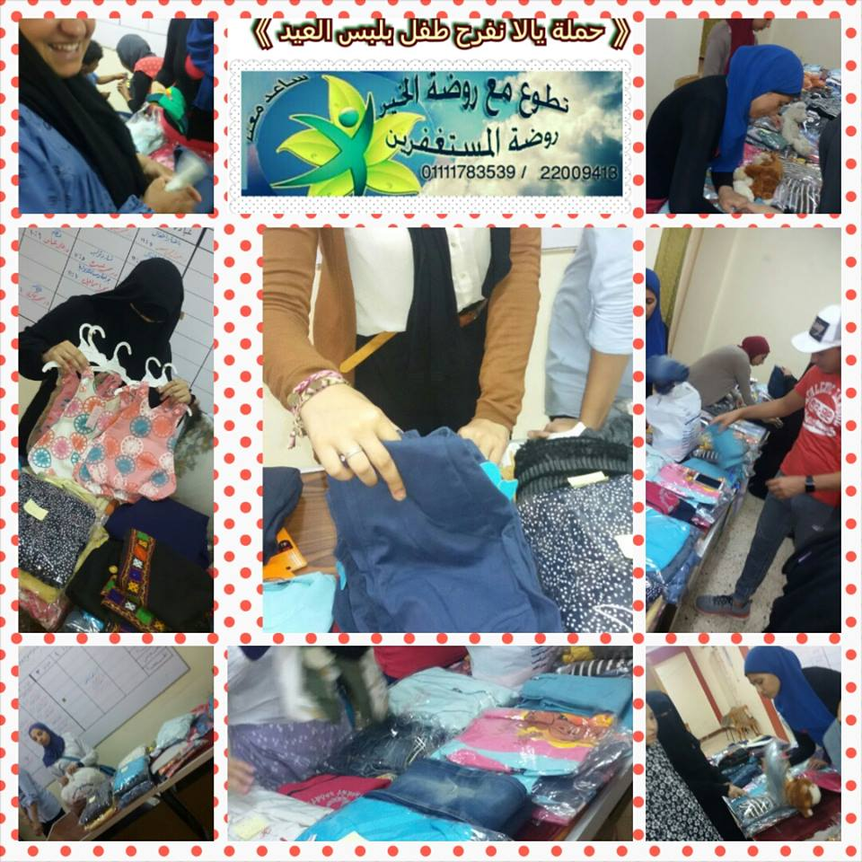
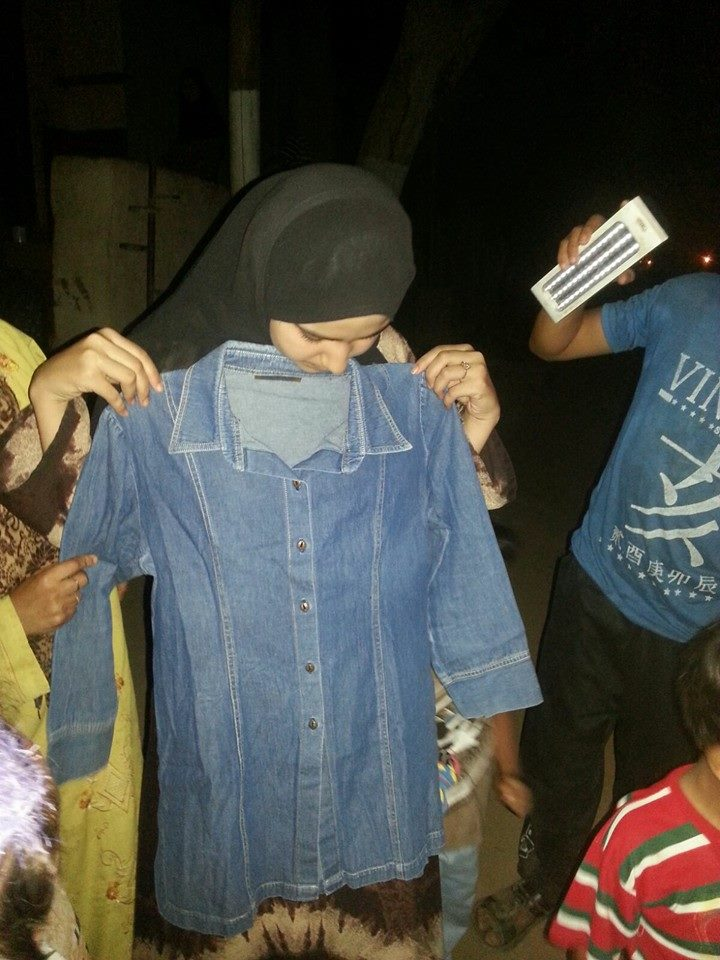
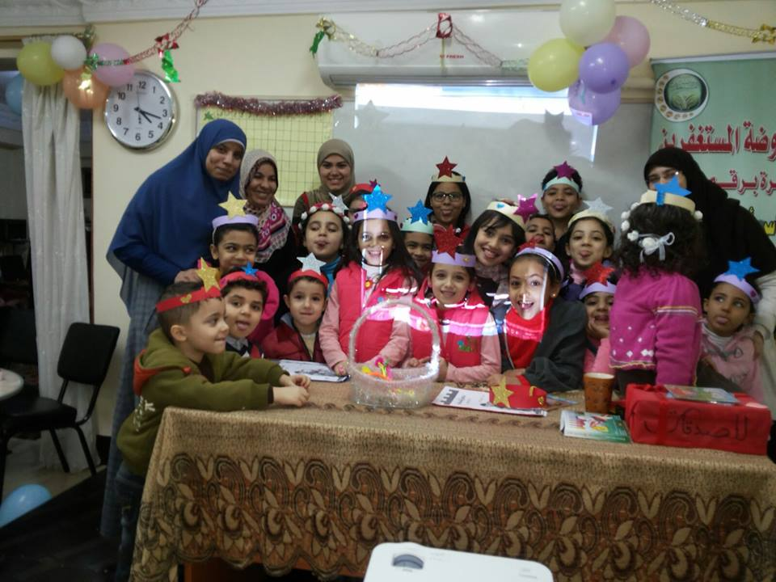

جمعية روضة المستغفرين تأسست سنة 2011 برقم 8185 تابعة للشئون الإجتماعية
" من فرج كربة من كرب الدنيا فرج الله له كربه من كرب يوم القيامة "
الهدف من الجمعية
نحن نعمل لتحقيق أحلام الفقراء والمحتاجين
ونهدف لخدمات خيرية غير تقليدية لتربية جيل جديد ... جيل الغد المشرق يعرف معنى الرجولة والأمومة والعطاء والعمل المتقن والإخلاص فى القول والعمل
مشاريع الجمعية
(1) مساعدة الأسر الفقيرة مادياً وعينية حسب عدد أفراد الأسرة
وذلك بإمدادها مبلغ من المال من 50 الى 100 جنيها وشنطة
تموينية ولحمه وفراخ شهرياً
(2) كفالة اليتيم : قال صلى الله عليه وسلم :" أنا وكافل اليتيم
كهاتين فى الجنة وأشار بإصبعيه السبابة والوسطى "
(3) تزويخ الفتيات اليتيمات والفقيرات ومساعدة الأرامل
(4) عمل قروض صغيرة لسداد الديون : تقوم الجمعية بعمل قروض
حسنة صغيرة لسداد الديون لمساعدة الاسر الفقيرة لعفتهم
بدلاً من تعودهم على الشحاتة أو المعونات الخارجية
(5) محو الأمية : فالهدف الأساسى للجمعية رفع الجهل وإذا رفع الجهل
عن الأمة بالتالى سيرفع الفقر والمرض
(6) عمل دورات تدريبية للتعليم مثل تربية الأولاد ومعاملة الزوج والزوجة
وحل المشكلات



أتصل بنا
ع : 11 شارع الطيب رابع شارع يمين من ش الورشة شبرا - محطة سانت تريزا
ت : 22009413 - 01111783539- 01223642653
حسابنا : لدى بنك فيصل الإسلامى رقم 261754